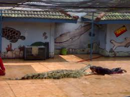
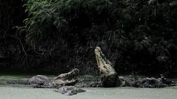
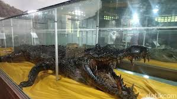

Foto ini merangkum esensi dari kunjungan ke taman buaya:
ini bukan hanya tentang melihat reptil dari jauh, tetapi
juga menyaksikan interaksi langsung yang mendebarkan
antara pawang yang terlatih dan satwa liar yang perkasa.
Fokus tajam pada buaya yang membuka mulut lebar atau gerakan
cepat pawang menunjukkan adanya keterampilan profesional dan
elemen risiko yang dikelola dengan baik.
|

Habitat buaya secara garis besar dapat disimpulkan sebagai berikut:
- Lingkungan Perairan Ganda: Buaya membutuhkan lingkungan
semi-akuatik—artinya mereka harus memiliki akses ke air dan daratan.
Air digunakan untuk berburu, pendinginan tubuh (thermoregulasi),
dan berlindung, sementara daratan (seperti lumpur, pasir, atau
tepian sungai) digunakan untuk berjemur dan bersarang.
- Preferensi Air Tawar: Mayoritas spesies buaya sangat
menyukai habitat air tawar, seperti sungai, danau, rawa-rawa,
dan lahan basah yang berlumpur.
- Toleransi Air Payau/Asin: Beberapa spesies, terutama Buaya Muara
(Crocodylus porosus), menunjukkan toleransi yang tinggi terhadap
air payau (muara sungai) bahkan air asin (laut), memungkinkan
mereka menyebar hingga ke wilayah pesisir dan pulau-pulau terpencil.
- Kebutuhan Ekologis: Habitat buaya dicirikan oleh adanya sumber
makanan yang melimpah dan suhu hangat yang konstan.
Kehadiran mereka sering menjadi indikator kesehatan ekosistem
perairan karena mereka adalah predator puncak (apex predator).
|

Museum Buaya adalah lembaga edukasi yang
menggabungkan unsur sejarah alam, konservasi,
dan pembelajaran mendalam mengenai reptil purba
ini. Tempat ini berfungsi sebagai pusat informasi
vital yang menampilkan berbagai spesimen, kerangka,
hingga artefak, memberikan wawasan komprehensif
tentang siklus hidup, habitat, dan peran ekologis
buaya di berbagai belahan dunia. Dengan menyajikan
koleksi yang terkurasi dan program edukasi yang
interaktif, museum ini tidak hanya mempromosikan
apresiasi publik terhadap buaya, tetapi juga
menyoroti urgensi konservasi untuk melindungi
spesies-spesies yang terancam punah dari kepunahan
di alam liar.
|